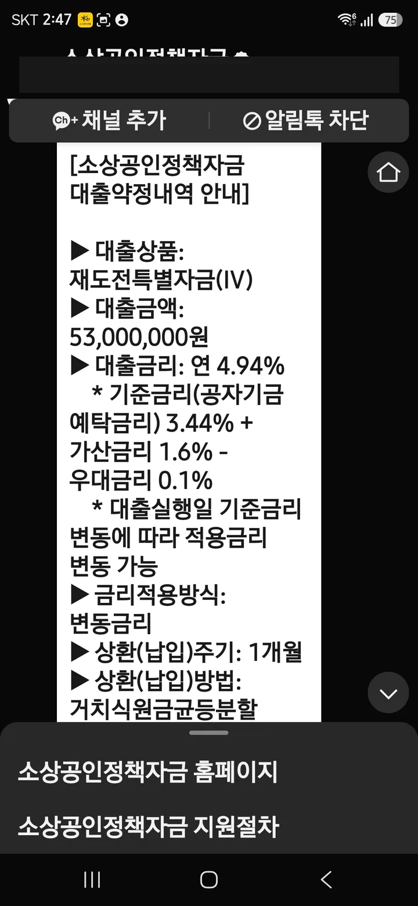
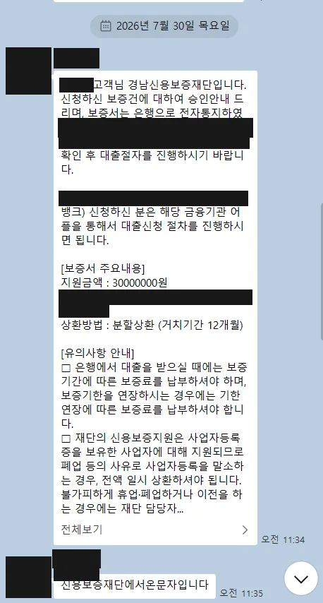

짧은 답: 저희 실행 기록 24건(2025.02~2026.08) 기준으로 거치 후 분할상환이 17건 — 거치 24개월 12건, 12개월 5건 — 이었고, 소진공 직접대출 약정 표기인 거치식 원금균등분할이 4건, 재단·기술보증기금 보증서 대출의 이자만 납부(만기 구조)가 3건이었습니다. 즉 "매달 얼마씩 나가나"의 답은 실행 직후가 아니라 거치가 끝나는 1~2년 뒤부터 본격적으로 시작됩니다.
기준일 2026년 8월 28일 · 상환 조건은 자금·실행 시점 공고에 따라 다르며, 아래 분포는 저희가 진행한 사례의 기록입니다. 원자료: cases.csv
실행 24건의 상환 구조 분포
| 구조 | 건수 | 어떻게 상환하나 | 실행 기록 예시 |
|---|---|---|---|
| 거치 후 분할상환 (거치 24개월) | 12건 | 실행 후 2년은 이자만, 이후 원금 분할. 실행 기록 최다 구조. | 2026-01 (1억원) 외 |
| 거치 후 분할상환 (거치 12개월) | 5건 | 실행 후 1년 거치. | 2026-14 (재도전 2,800만) 외 |
| 거치식 원금균등분할 (공단 약정 표기) | 4건 | 소진공 직접대출 약정서의 표기. 납입주기 1개월. | E5 (6,000만 · 연 3.84%) 외 |
| 보증서 대출 — 이자만 납부 | 3건 | 재단·기보 보증부. 만기까지 이자만, 만기 상환 또는 연장. | E7 (기보 2억 9,000만) 외 |
용어부터 정확히
| 용어 | 뜻 |
|---|---|
| 거치기간 | 원금 상환을 미루고 이자만 내는 기간. 실행 초기 1~2년이 일반적이며, 이 기간에도 월 이자는 냅니다. |
| 원금균등분할 | 남은 기간 동안 원금을 똑같이 나눠 내는 방식. 매달 ‘균등 원금 + 남은 원금의 이자’라서 납입액이 조금씩 줄어듭니다. |
| 이자만 납부(만기 구조) | 보증서 대출에서 흔한 방식 — 만기까지 이자만 내고, 만기에 원금을 상환하거나 보증 연장 심사로 기간을 늘립니다. |
| 상환(납입)주기 | 납입 간격. 정책자금은 대부분 1개월입니다. |
| 변동금리 | 기준금리 변동에 따라 적용 금리가 함께 움직이는 방식. 소진공 직접대출은 공자기금 예탁금리 연동 변동금리가 일반적입니다. |
| 중도상환 | 만기 전에 원금 일부·전부를 미리 상환하는 것. 다수 정책자금은 중도상환수수료가 없습니다(상품 공고 확인). |
월 납입액, 감 잡기 (예시 계산)
예시 — 3,000만원 · 연 4.94% · 거치 12개월 후 48개월 원금균등분할(실행 기록 재도전특별자금 실측 금리 기준의 가상 예시입니다. 실제 금액·기간은 약정에 따릅니다):
- 거치기간(첫 12개월) — 월 이자만: 3,000만 × 4.94% ÷ 12 ≈ 약 12만 3천원
- 분할 시작 첫 달 — 균등 원금 62만 5천원(3,000만÷48) + 이자 약 12만 3천원 ≈ 약 74만 8천원
- 이후 — 원금은 그대로, 이자는 남은 원금 기준이라 매달 조금씩 줄어듭니다. 마지막 달은 약 62만 8천원.
변동금리라면 기준금리 변동에 따라 이자 부분이 함께 움직입니다. 실행 전에 이 계산을 본인 금액으로 해보는 것 — 그게 "받아도 되는 금액"을 정하는 가장 정직한 방법입니다.


연체하면 어떻게 되나
연체가 시작되면 지연배상금이 붙고, 길어지면 기한이익상실 — 남은 원금 전액을 일시에 상환하라는 요구 — 로 이어지며 신용에도 기록이 남습니다. 또 하나, 소진공 약정문에 명시된 조건: 자금집행계획과 무관한 용도로 대출금을 사용한 사실이 확인되면 일시회수(지연배상금 부과)·대출 제한 조치가 가능합니다. 운전자금을 받아 다른 곳에 쓰는 것도 상환 문제만큼 위험합니다. 상환이 어려워질 것 같으면 연체 전에 취급 기관에 먼저 연락해 만기 연장·조건 조정을 상담하는 것이 손해를 가장 줄입니다.
정책자금은 대출이며 상환 의무가 있습니다. 승인 여부와 조건은 각 심사 기관이 결정하고, 비즈니스 메이커는 특정 결과를 보장하지 않습니다. 착수금·진행비 등 실행 전 비용은 일절 받지 않고, 자금이 실제 실행된 경우에만 성공보수를 받습니다.
자주 묻는 질문
거치기간에는 아무것도 안 내나요?
여유가 생기면 미리 상환해도 되나요?
보증서 대출은 왜 이자만 내나요?
상환이 어려워지면 어떻게 되나요?
내 조건이면 어떤 상환 구조인지
자금 트랙에 따라 거치·상환 구조가 달라집니다. 무료 진단에서 예상 구조와 월 부담까지 같이 봐드립니다.
카카오톡 무료 진단 전화 1666-2425